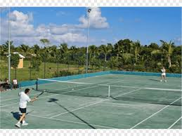
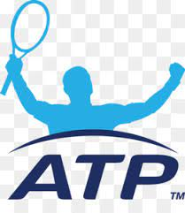

El tenis es también conocido como el Deporte Blanco gracias a que en sus inicios, todos los participantes tenían que ir portar una vestimenta completamente blanca, en la actualidad, pocos torneos conservan esa tradición, el torneo de Wimbledone y pocos más. En este deporte no hay contacto directo entre los jugadores, ya que la cancha está separada en dos partes.
Para ganar un partido normal, tienes que ganar 2 de 3 sets, cada set tiene 6 juegos, y para ganar un juego se tiene que ganar 4 puntos por diferencia de 2. En el caso de los juegos, si llegan a 5-5, sube a 7, y si se llega al 6-6, se hace algo que se llama muerte súbita, esta muerte súbita es el juego desicivo para ganar el set, el primero que gane 7 puntos por diferencia de 2 gana la muerte súbita y por ende, el set.>
Los únicos torneos donde cmabia el formato de conteo son los Grand Slam. Hay 4 de estos torneos al año.
La federación genral de este deporte es la ITF (International Tennis Federation), pero también hay otras dos asociaciones, la de la categoría profesional varonil (ATP) y la profesional femenil (WTA).
